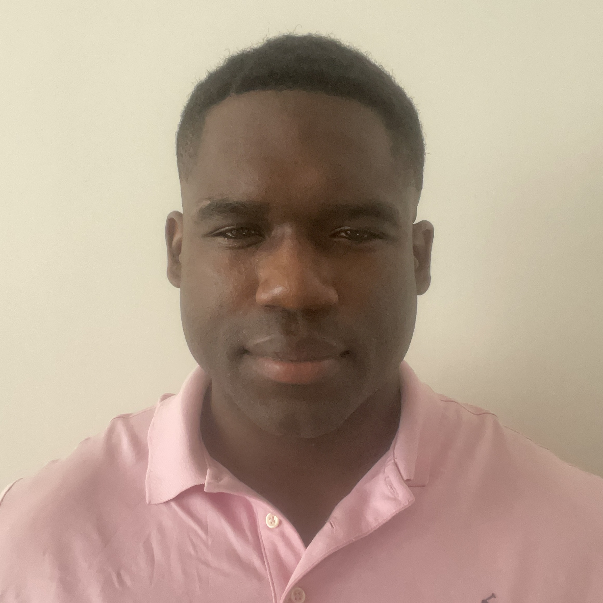

Mike Taylor III

Summary
Dynamic and versatile professional with a strong background in computer science
and information technology, combined with extensive experience in teaching English
as a foreign language. Founder of the All American School of English, with five years
of experience creating engaging, effective learning experiences for international students.
Skilled in C++ development and adept at managing online businesses. A European League of
Football athlete bringing a disciplined, team-oriented mindset to every endeavor.
Fluent in English, with working knowledge of Polish and German, currently based in Paris.
Education
- Bachelor of Arts in History, Georgetown University, 2015-2019
- Bachelor of Science in Computer Science, University of Phoenix, 2020-2024
- Master in Information technology, University of Phoenix, 2024-Present
Work Experience
- NCAA Division I Football Player Georgetown University, Washington, D.C. July 2015 – December 2019
- Practiced 20+ hours per week during the season and 10+ hours during the off-season, while balancing academic responsibilities and travel.
- Analyzed game film 14 hours weekly to implement defensive strategies and adapt to evolving game plans.
- Residential Crew Manager Georgetown Residential Living, Washington, D.C. July 2015 – July 2018
- Supervised daily operations and coordinated work orders for residential housing.
- Managed a team of 15-20 Crew Assistants, overseeing inventory and resource allocation.
- Collaborated with management to resolve operational issues and enhance efficiency.
- Delivered excellent customer service to students and residents.
- Student Caller Georgetown Alumni Funds, Washington, D.C. August 2018 – January 2020
- Updated and managed alumni data, ensuring server accuracy and completeness.
- Persuaded alumni to contribute donations, increasing funds for university initiatives.
- Delivered outstanding customer service to alumni and university stakeholders.
- Updated and managed alumni data, ensuring server accuracy and completeness.
- Persuaded alumni to contribute donations, increasing funds for university initiatives.
- Professional Football Player, Poland, Germany, Spain, Austria December 2020 – Present
- All American School of English, English Tutor and Founder Online/In-Person February 2021 – Present
- Provide private English tutoring to non-native speakers across Europe.
- focusing on improving fluency and communication skills.
Skills
- HTML ★★★★★
- CSS ★★★★★
- JavaScript ★★★★☆
- PHP ★★★☆☆
- Python ★★★☆☆
- C++ ★★★☆☆
- Polish ★★★☆☆
Awards and Certifications
- Teaching English as A Foreign Language (TEFL) 2020
- Google Marketeing Certificate (2020)
Other